冰激凌和比萨饼中的π
对于任意圆而言，直径D是半径的两倍：
D = 2r
绕圆一周的长度叫作圆周，记作C。从上图可以看出，由P沿圆周至Q的距离大于D，由Q沿圆周回到P的距离同样大于D，因此C大于2D。仔细观察的话，你甚至可以确定C比3D还要大一点儿。（不过，我们可能需要戴上三维眼镜，才能看得清楚。太遗憾了！）
如果想比较圆形物体的周长与直径之间的关系，我们可以用绳子绕物体一周，然后测量绳子的长度，再除以直径就可以了。无论这个圆形物体是硬币、玻璃杯的杯底、餐盘还是呼啦圈，我们最后都会得到：
C / D ≈ 3.14
我们把这个常量定义为π（读作“pie”），表示圆的周长与直径的比值：
π = C / D
对于任意圆，π的值都是相同的！当然，你也可以把上式变成任意圆的周长公式。对于周长为D（或半径为r）的任意圆，都有：
C = πD或C = 2πr
π的值为：
π = 3.141 59…
在后文中，我们将给出π的更多位数的小数值，还将讨论它的数字属性。
延伸阅读
有趣的是，人的眼睛在估算圆的周长时往往不太准确。比如，大家随便找一个喝水用的大玻璃杯试一试。凭肉眼观察，你能判断出玻璃杯的高度和周长哪个更大吗？大多数人觉得高度大于周长，但真实情况是周长大于高度。不信的话，大家可以伸出拇指和中指，测量一下杯子的直径，就会发现杯子的高度不到直径的3倍。
现在，我们可以回答本章开头提出的问题1了。如果我们把地球的赤道看作一个标准的圆，周长C = 25 000英里，它的半径就是：
不过，要回答这个问题，地球的半径是多少并不重要，我们需要知道的是在周长增加10英尺的情况下，半径会增加多少。如果周长增加10英尺，圆的大小会略有增加，半径增加的量是10/(2π) = 1.59英尺。因此，绳子的高度只够你从下方爬过去（除非你是凌波舞高手，否则你无法从绳子下方走过去）。令人惊讶的是，这个问题的答案竟然与地球的实际周长没有任何关系。把地球换成其他星球或者任何尺寸的球体，答案都不会有变化！例如，如果圆的周长 C = 50英尺，它的半径就是50/(2π) ≈ 7.96英尺。周长增加10英尺后，圆的半径就会变成60/(2π) ≈ 9.55英尺，约增加1.59英尺。
延伸阅读
下面，再向大家介绍圆的另一个重要特性。
定理：令X和Y为圆上完全相对的两个点，那么对于圆上的任意一点P，都有∠XPY = 90°。
例如，下图中的∠XAY、∠XBY和∠XCY都是直角。
证明：连接O和P，设∠XPO = x，∠YPO = y。根据题意，我们需要证明 x + y = 90°。
由于
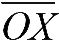
和
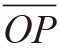
是圆的半径，长度都是
r，因此三角形
XPO是等腰三角形。根据等腰三角形定理，∠
OXP = ∠
XPO =
x。同理，
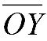
也是半径，且∠
OYP = ∠
YPO =
y。由于三角形
XYP的内角和为180°，也就是说2
x + 2
y = 180°，即
x +
y = 90°。证明完毕。

这条定理是“圆心角定理”的一个特例。在几何学中，圆心角定理是我最喜欢的定理之一，我将在下一个“延伸阅读”中详细介绍这个定理。
利用圆心角定理，我们可以找出本章开头的问题2的答案。令X和Y为圆上任意两点。以X和Y为端点的弧有两条，长的那条叫作优弧，短的那条叫作劣弧。圆心角定理指出，在X与Y之间的优弧上任取一点P，∠XPY的度数保持不变。具体来说，∠XPY的度数是圆心角∠XOY的一半。如果Q是X与Y之间的劣弧上的一点，则∠XQY = 180°–∠XPY。
例如，如果∠XOY = 100°，那么X、Y与优弧上的任意点P构成的∠XPY = 50°，X、Y与劣弧上的任意点Q构成的∠XQY = 130°。
知道圆的周长之后，就可以推导出圆的一个重要公式：面积计算公式。
定理：半径为r的圆的面积为πr2。
学校老师可能会要求我们死记硬背这个公式，但是，如果了解这个公式成立的理由，就可能会取得更令人满意的效果。严谨的证明需要使用微积分知识，但即使不用微积分，也可以给出一个令人信服的证明过程。
证明方法1：如下图所示，把圆看成一系列同心环。按图中所示方向，从顶部向下切割这个圆，一直切至圆心处，然后将它展开，形成一个类似三角形的图形。这个三角形的面积是多少呢？
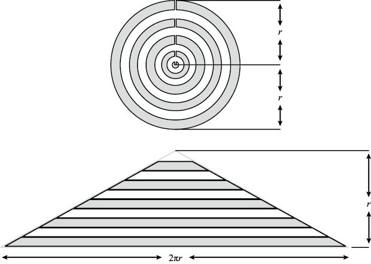
半径为r的圆的面积为πr2
底为b、高为h的三角形面积是 bh。上面这个类似三角形的图形的底是2πr（圆的周长）、高是r（从圆心至该结构底部的距离）。随着同心环的数量不断增加，切开的圆与三角形越来越接近，因此圆的面积是：
bh。上面这个类似三角形的图形的底是2πr（圆的周长）、高是r（从圆心至该结构底部的距离）。随着同心环的数量不断增加，切开的圆与三角形越来越接近，因此圆的面积是：
bh =(2πr) (r) = πr2
证明完毕。
这么美妙的定理，一定要反复证明才行！这个证明方法把圆看作一个洋葱，接下来我们把圆变成比萨饼。
证明方法2：将圆分成很多个大小相等的部分，然后将上、下半圆分成的部分穿插在一起。下图显示的是8等分和16等分的情况。
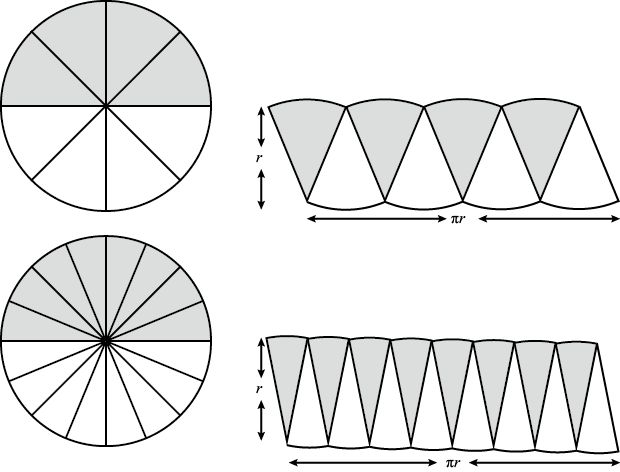
圆的面积为πr2的另一个证明方法（比萨饼法）
随着等分的数量不断增加，每等分的形状与高为r的三角形越来越接近。将下半个圆分割而成的这些“三角形”（仿佛一排石笋）与上半个圆分割而成的“三角形”（像一排钟乳石）穿插在一起，形成的图形与矩形十分接近。矩形的高为r，底等于周长的1/2，即πr。（为了让最后的图形更像矩形，而不是平行四边形，我们将最左边的“钟乳石”分成两半，将其中一半移到最右边。）等分数越多，最后得到的图形就越接近矩形，因此圆的面积是：
bh = (πr) (r) = πr2
证明完毕。
我们经常需要描述圆的平面坐标图。如下图所示，以 ( 0, 0 ) 为圆心、以r为半径的圆可以用方程式
x2 + y2 = r2
来表示。为什么呢？我们令 (x, y) 为圆上的任意一点，然后画一个直角边长为x和y、斜边长为r的三角形。根据勾股定理，我们知道x2 + y2 = r2。
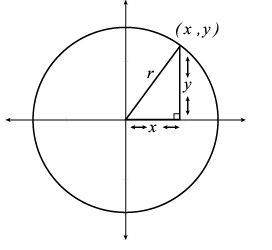
以 (0,0) 为圆心、以r为半径的圆的方程式为x2 + y2 = r2，面积为πr2
当r = 1时，上图这个圆被称为“单位圆”（unit circle）。如下图所示，我们拉伸单位圆，使它在水平方向和垂直方向上分别变为原来的a倍和b倍，就会得到椭圆。
椭圆的方程式为：
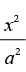
+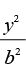
= 1
由于单位圆的面积是π，椭圆是单位圆拉伸ab倍后的结果，因此它的面积是πab。注意，当 a = b = r时，所得到的图形就是半径为r的圆。根据椭圆的面积公式πab，我们可以算出圆的面积，即πr2。
下面向大家介绍椭圆的几个有趣的属性。利用两枚大头针、一个线圈和一支铅笔，就可以画出椭圆。首先，将两枚大头针钉在纸上或硬纸板上，然后将线的两头固定在大头针上，不要绷得太紧。如下图所示，将铅笔放到线圈的某个位置上并拉紧线圈，形成一个三角形，然后让铅笔运动一周。在运动的过程中，铅笔要始终拉紧线圈。最终得到的图形就是一个椭圆。
椭圆的焦点，即两枚大头针所在的两个点，具有非常神奇的特性。如果你将一个弹珠或台球放在其中一个焦点上，然后朝任意方向击打它。这个弹珠或台球在椭圆上反弹一次之后，运动方向就会朝向椭圆的另一个焦点。
行星、彗星等天体的运行轨道都是椭圆形的。
延伸阅读
有意思的是，椭圆的周长没有一个简单的计算公式。但是，数学界的天才人物拉马努金（Srinivasa Ramanujan，1887—1920）找到了下面这个美妙的计算公式。以前文中描述的椭圆为例，它的周长约为：
注意，当 a = b = r时，上式就会变成π( 6r –
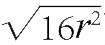
) =2π
r，与圆的周长计算公式不谋而合。
在三维物体中也能发现π的身影。以圆柱体（例如，一盒罐头）为例。半径为r、高为h的圆柱体体积（即该物体所占空间大小）是：
V圆柱体 = πr2h
这个公式显然是成立的，因为我们可以把圆柱体看作由面积为πr2的圆不停叠加（就像饭店经常把圆形杯垫叠放成一摞）形成的高为h的物体。
那么，圆柱体的表面积怎么计算呢？换句话说，把圆柱体的表面（包括顶面和底面）刷上油漆，需要多少呢？这个答案无须记忆，因为把圆柱体分成三个部分，就可以轻松地找到答案。顶面和底面的面积都是πr2，加起来就是2πr2。在求剩下部分的面积之前，我们将圆柱体从上向下切开，展开后就会得到一个底为2πr、高为h的矩形。也就是说，圆柱体的侧面面积就是这个矩形的面积，即2πrh。因此，圆柱体的表面积为：
A圆柱体 = 2πr2 + 2πrh
球体是一个三维物体，球面上的所有点到球心的距离都相等。半径为r的球体体积是多少呢？这样的球体可以被装进半径为r、高为2r的圆柱体之中，因此它的体积必然小于πr2(2r) = 2πr3。运气好的话，你会发现它正好是圆柱体体积的2/3（当然，微积分也可以帮你找到这个答案）。换句话说，球体的体积是：
V球体 = πr3
πr3
球体的表面积计算公式非常简单，不过推导过程却非常复杂：
A球体 = 4πr2
接下来，我要告诉你们，在冰激凌和比萨饼中也能找到π。想象你的手里正拿着一个圆筒冰激凌，它的高是h，顶部的那个圆的半径是r。如下图所示，令圆筒的尖头到该圆上任意一点的“斜高”（slant height）为s。（根据勾股定理，可以算出s的值，因为 h2 + r2 = s2。）
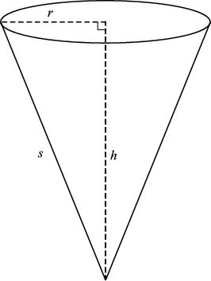
圆锥体的体积是πr2h/3，表面积是πrs
这样的圆锥体可以被放到半径为r、高为h的圆柱体里面，因此，它的体积小于πr2h并不是一件奇怪的事。但是，如果我说它的体积正好是圆柱体体积的1/3，大家肯定会感到吃惊（不借助微积分的话，我们凭直觉无法发现这个秘密）。换句话说：
V圆锥体 = πr2h
πr2h
尽管不使用微积分也可以推导出圆锥体的表面积计算公式，但我还是直接把这个公式介绍给大家，让大家尽情领略其简约之美吧：
A圆锥体 = πrs
最后，我送给大家一个美味的比萨饼。如图所示，它的半径是z，厚度是a，请问它的体积是多少？
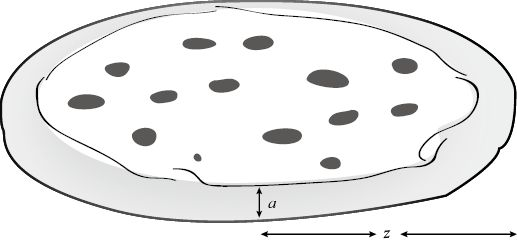
半径是z、厚度是a的比萨饼体积是多少？
这个比萨饼可以被视为一个比较少见的圆柱体，半径为z，高度为a，因此它的体积是：
V = πz2a
大家看出这个答案中暗藏的玄机了吗？如果没有，我再写一遍：
V = pi z z a